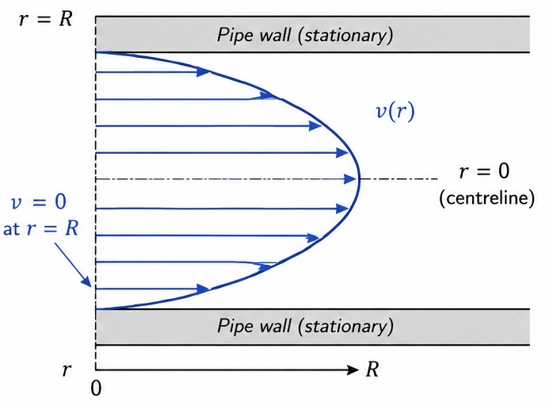
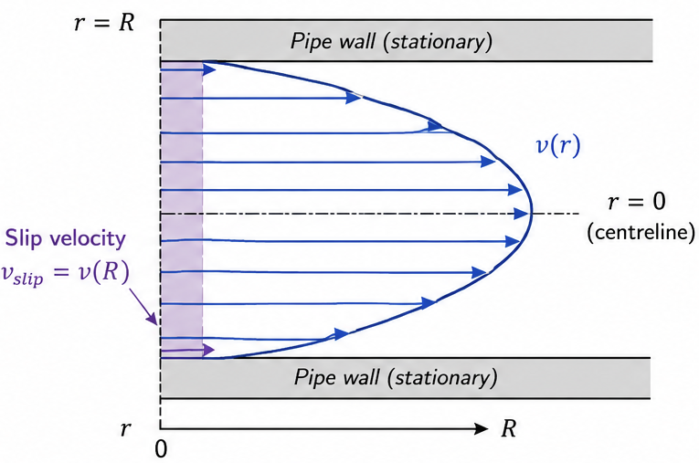
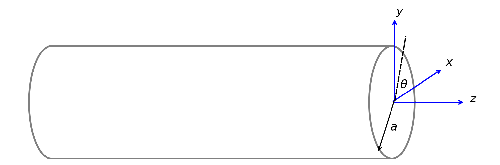
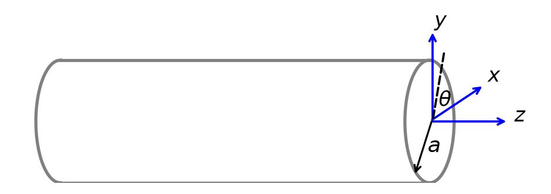
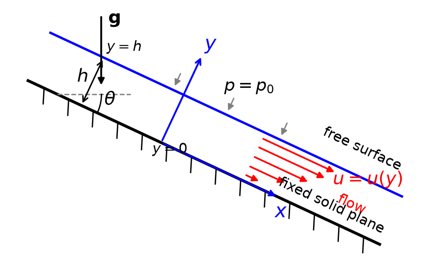

---
config:
themeVariables:
fontSize: 24px
---
flowchart LR
A[Fluid Dynamics] --> B[Compressible]
A --> C[Incompressible]
B --> D[Non-viscous]
B --> E[Newtonian]
C --> F[Non-Newtonian]
C --> E
Lecture 4 — Mechanics of Incompressible Newtonian Fluids
MATH3001(5005) — Applied Mathematical Modelling (Topics)
Prof. Benchawan Wiwatanapataphee
Curtin University
11 Aug 2026
Goals today:
- Introduction to Fluid Mechanics
- Governing Equations — Navier-Stokes Equations
- Boundary Conditions at a Solid-Fluid Interface
- Some Solutions of the Navier-Stokes Equations
Next lecture:
- Reynolds Number and Dynamic Similarity
- Laminar Flow and Turbulent Flow
- Irrotational Flow
- Bernoulli’s Equation
0. Introduction to Fluid Mechanics
What is fluid dynamics?
Fluid dynamics (hydrodynamics) is the study of the movement of fluids, including their interactions as two fluids come into contact with each other. In this context, the term “fluid” refers to either liquid or gases.
- As fluids flow, the density \((\rho)\) and pressure \((p)\) of the fluids are also crucial to understanding how they will interact.
- The viscosity \((\mu)\) determines how resistant the liquid is to change, so is also essential in studying the movement of the liquid.
- The kinematic viscosity \((\nu=\mu/\rho)\) is the ratio of the dynamic viscosity to the density of the fluid, and is also important in understanding how fluids flow.

Figure 1: Computer generated animation of fluid in a tube flowing past a cylinder. The streamlines show the direction of the fluid flow, and the color gradient shows the pressure at each point, from blue to green, yellow, and red indicating increasing pressure. Animated GIF by PR (2012), Wikimedia Commons, licensed under CC BY-SA 3.0. Adapted from Wikimedia Commons. (source)
Terminology
Steady Flow
A flow in which the fluid properties (velocity, pressure, etc.) at a given point does not change with time.
Unsteady Flow
A flow in which the fluid properties (velocity, pressure, etc.) at a given point changes with time.
Laminar Flow
A flow in which the fluid moves in parallel layers with no disruption between the layers.

Turbulent Flow
A flow that is characterised by chaotic, irregular motion of fluid particles, with eddies and vortices.

Terminology (cont.)
Pipe Flow
A flow that is in contact with rigid boundaries on all sides. Flows in a pipe are driven by either pressure or gravity.

Open-Channel Flow
A flow that is at least partially bounded by a free surface. Flows in an open channel are driven solely by gravity, e.g., rivers, streams, and canals.

Compressible Flow
A flow in which the fluid density changes significantly within the flow field. This typically occurs at high velocities, such as in supersonic flows.

Incompressible Flow
A flow in which the fluid density is assumed to be constant. This is a valid assumption for liquids and for gases at low velocities.

Applications of Fluid Mechanics
- Oceanography:
- the motion of currents and waves
- Meteorology:
- the motion of air masses and weather patterns
- Climate Science:
- the motion of the atmosphere and its interaction with the oceans and land surfaces
- Aeronautics:
- the flow of air to create drag/lift
- Geology & Geophysics:
- the motion of the heated matter within the liquid core of the Earth.
- Hematology & Hemodynamics:
- blood circulation through blood vessels
- Astrophysics & Cosmology:
- the process of stellar evolution involves the change of stars
- Traffic Analysis:
- traffic flow on roads and highways
Can you think of any other applications of fluid mechanics?
The Study of Fluid Mechanics
- The study of fluids in motion. It concerns:
Kinematics of the flow field
Stress distribution throughout the field
- Classification is on the basis of constitutive equations for the fluid and in terms of compressibility of the fluid.
5.1 Governing Eqs — the Navier–Stokes (N-S) Eqs
The equations governing the flow of an incompressible Newtonian fluid consist of
(i) the equations of motion
\[ \frac{\partial \sigma_{ji}}{\partial x_j} +\rho X_i = \rho\frac{Dv_i}{Dt}, \tag{1}\]
(ii) the continuity equation
\[ \operatorname{div}(\mathbf{v}) = \frac{\partial v_j}{\partial x_j} = 0, \tag{2}\]
(iii) the constitutive equations
\[ \sigma_{ij} = -p\delta_{ij} + 2\mu d_{ij}, \tag{3}\]
(iv) the material derivative
\[ \frac{Dv_i}{Dt} = \frac{\partial v_i}{\partial t} + v_j\frac{\partial v_i}{\partial x_j} = a_i. \]
(v) the rate of deformation
\[ d_{ij} = \frac12 \left( \frac{\partial v_i}{\partial x_j} + \frac{\partial v_j}{\partial x_i} \right). \]
(i) The equations of motion
The stress equation of motion is derived from the conservation of momentum and is a key equation in fluid dynamics. It relates the stress in the fluid to the acceleration experienced by a fluid element due to forces.
Forces acting \(\longrightarrow\)
on a fluid element\(\qquad\)
\[ \boxed{ \color{blue}{\frac{\partial \sigma_{ji}}{\partial x_j} +\rho X_i}} = \boxed{ \color{green}{ \rho\frac{Dv_i}{Dt},}} \]
\(\longleftarrow\) Inertial response
\(\qquad\)(acceleration)
- \(\frac{\partial \sigma_{ji}}{\partial x_j}\): spatial rate of change of the stress tensor \(\sigma_{ji}\) in the direction \(x_j\), which represents the internal forces within the fluid.
- \(\rho\): density of the fluid
- \(X_i\): body force per unit mass acting on the fluid, such as gravity
- \(\frac{Dv_i}{Dt}\): the material derivative of the velocity component \(v_i\), which represents the acceleration of a fluid particle.
(ii) The continuity equation
The equation expresses the conservation of mass for an incompressible fluid. It ensures that the fluid density remains constant as it flows, which means that the amount of fluid entering a volume is equal to the amount leaving.
\[ \operatorname{div}(\mathbf{v}) = \frac{\partial v_j}{\partial x_j} = 0, \]
- \(\operatorname{div}(\mathbf{v})\): the divergence of the velocity field \(\mathbf{v}\), which measures the net rate of flow of fluid out of a point in space.
- \(\frac{\partial v_j}{\partial x_j}\): the rate of change of the velocity component \(v_j\) with respect to the spatial coordinate \(x_j\), summed over all directions.
For an incompressible fluid, the divergence of the velocity field is zero, indicating that there is no net volumetric expansion or compression at any point in the fluid.
(iii) The constitutive equations
The constitutive equation for an incompressible Newtonian fluid relates the stress tensor \(\sigma_{ij}\) to the rate of deformation (strain rate) tensor. For a Newtonian fluid, the stress is linearly related to the rate of deformation.
\[ \sigma_{ij} = -p\delta_{ij} + 2\mu d_{ij}, \]
- \(\sigma_{ij}\): the stress tensor, which represents the internal forces within the fluid.
- \(p\): the pressure in the fluid, which acts isotropically (equally in all directions).
- \(\delta_{ij}\): the Kronecker delta, which is 1 if \(i=j\) and 0 otherwise, representing the identity matrix.
- \(\mu\): the dynamic viscosity of the fluid, which measures its resistance to shear flow.
- \(d_{ij}\): the rate of deformation (strain rate) tensor, which describes how the fluid is deforming over time.
(iv) The material derivative
Time rate of change of the velocity of a fluid particle as it moves along a flow path.
\[ \frac{Dv_i}{Dt} = \frac{\partial v_i}{\partial t} + v_j\frac{\partial v_i}{\partial x_j} = a_i, \]
- \(\frac{\partial v_i}{\partial t}\): the local acceleration or the rate of change of velocity at a fixed point.
- \(v_j\frac{\partial v_i}{\partial x_j}\): the convective acceleration, which accounts for the change in velocity due to the movement of the fluid particle through the velocity field.
- \(a_i\):the total acceleration of a fluid particle in the \(i\)-th direction.
(v) The rate of deformation \(d_{ij}\)
The rate at which the fluid elements are deforming (stretching or shearing). For an incompressible fluid, the deformation tensor is symmetric.
\[ d_{ij} = \frac12 \left( \frac{\partial v_i}{\partial x_j} + \frac{\partial v_j}{\partial x_i} \right). \]
5.1.1 Derivation of the Navier–Stokes Equations
Substituting (3) into (1) gives
\[ \rho\frac{Dv_i}{Dt} = -\frac{\partial p}{\partial x_i} + \rho X_i + \mu \left( \frac{\partial^2v_i}{\partial x_j\partial x_j} + \frac{\partial^2v_j}{\partial x_i\partial x_j} \right). \tag{4}\]
Using (2), we have
\[ \frac{\partial v_j}{\partial x_j}=0, \]
hence
\[ \frac{\partial^2v_j} {\partial x_i\partial x_j} = 0. \]
Therefore (4) reduces to
\[ \boxed{\rho\frac{Dv_i}{Dt} = -\frac{\partial p}{\partial x_i} + \rho X_i + \mu\nabla^2v_i}, \tag{5}\]
which are the Navier–Stokes equations for incompressible Newtonian fluids.
Written in expanded form,
\[ \begin{aligned} \rho\frac{Du}{Dt} &= -\frac{\partial p}{\partial x} +\rho X +\mu\nabla^2u, \\ \rho\frac{Dv}{Dt} &= -\frac{\partial p}{\partial y} +\rho Y +\mu\nabla^2v, \\ \rho\frac{Dw}{Dt} &= -\frac{\partial p}{\partial z} +\rho Z +\mu\nabla^2w. \end{aligned} \tag{6}\]
Remarks
The Navier–Stokes equations for other classes of fluids can be derived using the same procedure but with different constitutive equations.
The Navier–Stokes equations (5), together with the continuity equation (2), constitute a system of four partial differential equations for the four unknown variables \(u\), \(v\), \(w\), and \(p\). Hence, in principle, the system is solvable.
5.2 Boundary Conditions (BCs) at a Solid–Fluid Interface
Consider the cases where fluids adhere to rigid surfaces bounding the fluid. Two types of BCs can be applied to the fluid velocity at the solid-fluid interface.
Normal component \(v_n=0\)
At a wall, the \(v_n\) must be identical to that of the solid surface, since the fluid cannot penetrate the solid.
Tangential component \(v_t\)
- No-slip BC: same as the wall (\(v_t=0\))
- Slip BC: between fluid and wall (\(v_t\!=\!v_\text{slip}\))


5.3 Some Solutions of the Navier–Stokes Equations
Example 1: Steady Flow Between Parallel Plates
Consider an incompressible Newtonian fluid located between two infinite parallel plates. Let the lower plate be fixed and the upper plate move with a constant velocity \(U\).

Assume that the only body forces are due to gravity and that the motion of the fluid is caused entirely by the movement of the upper plate. Hence, \(\frac{\partial p}{\partial x}=0.\)
Determine (a) the velocity field, (b) the pressure distribution, and (c) the stress components in the fluid.
(a) Velocity field
The governing eqs are the N-S eqs and the continuity eq:
\[ \begin{aligned} \frac{Du}{Dt} &= -\frac{1}{\rho}\frac{\partial p}{\partial x} +X +\frac{\mu}{\rho}\nabla^2u, \\ \frac{Dv}{Dt} &= -\frac{1}{\rho}\frac{\partial p}{\partial y} +Y +\frac{\mu}{\rho}\nabla^2v, \\ \frac{Dw}{Dt} &= -\frac{1}{\rho}\frac{\partial p}{\partial z} +Z +\frac{\mu}{\rho}\nabla^2w, \\ &\frac{\partial u}{\partial x} + \frac{\partial v}{\partial y} + \frac{\partial w}{\partial z} =0. \end{aligned} \]
- The no-slip BCs are
\[ u|_{y=0}=0 \; u|_{y=h}=U. \tag{7}\]
- Other given conditions are
\[ \begin{aligned} \frac{\partial p}{\partial x}&=0, \quad X=0, \\ Y&=-g, \quad Z=0. \end{aligned} \tag{8}\]
- Assumptions based on large, parallel plates are \(v=0=w=0.\)
Substituting \(v=w=0\) into the continuity eq gives \(\dfrac{\partial u}{\partial x}=0 \;\Longrightarrow\;u=u(y,z,t).\)
As flow is steady and plates are infinite in \(z\)-direction, there is no variation in velocity in \(t\) & \(z\), thus \(u=u(y)\).
Using (8), \(u=u(y)\) and \(v=w=0\), the N-S eqs reduce to
\[ \begin{aligned} \frac{Du}{Dt} &= -\frac{1}{\rho}\frac{\partial p}{\partial x} +X +\frac{\mu}{\rho}\nabla^2u, \\ \frac{Dv}{Dt} &= -\frac{1}{\rho}\frac{\partial p}{\partial y} +Y +\frac{\mu}{\rho}\nabla^2v, \\ \frac{Dw}{Dt} &= -\frac{1}{\rho}\frac{\partial p}{\partial z} +Z +\frac{\mu}{\rho}\nabla^2w \end{aligned} \]
\[ \begin{aligned} &\Longrightarrow\frac{\partial^2u}{\partial y^2}=0, \\ &\Longrightarrow-\frac{1}{\rho}\frac{\partial p}{\partial y}-g=0, \\ &\Longrightarrow\frac{\partial p}{\partial z}=0. \end{aligned} \tag{9}\]
From (9) \(_1\), integrating twice with respect to \(y\),
\[ \frac{\partial u}{\partial y}=A \;\;\Longrightarrow\;\; u=Ay+B, \quad A,B\in\mathbb{R}. \]
Using (7), \(\quad u(0)=0 \; \Longrightarrow\; B=0, \quad u(h)=U \; \Longrightarrow\; Ah=U.\)
Therefore, the velocity distribution is \[ \begin{aligned} u(y)=\frac{U}{h}y,\;v=0,\;w=0 \; \text{or}\; \mathbf{v}=\left(\frac{Uy}{h},\,0,\,0\right) \end{aligned} \tag{10}\]
(b) Pressure distribution
From the \(y\)-direction Navier–Stokes equation,
\[ \begin{aligned} -\frac{1}{\rho}\frac{\partial p}{\partial y}-g&=0\\ \frac{\partial p}{\partial y}&=-\rho g. \end{aligned} \]
Since \(\frac{\partial p}{\partial x}=0\) and \(\frac{\partial p}{\partial z}=0,\) the pressure depends only on \(y\):
\[ p=p(y). \]
Integrating,
\[ p(y)=-\rho gy+C, \quad C\in\mathbb{R}. \]
If the pressure is \(p_0\) at \(y=0\), then \(C=p_0\), and consequently
\[ p(y)=p_0-\rho gy. \]
Thus, the pressure distribution is hydrostatic1.
(c) Stress components
For an incompressible Newtonian fluid, the constitutive equation is
\[ \sigma_{ij} = -p\delta_{ij} + \mu \left( \frac{\partial v_i}{\partial x_j} + \frac{\partial v_j}{\partial x_i} \right). \tag{11}\]
For the velocity field in (10) the only nonzero velocity derivative is \(\frac{\partial u}{\partial y}=\frac{U}{h}.\)
\[ \begin{aligned} \sigma_{xx} &= -p + 2\mu\frac{\partial u}{\partial x} = -p,\\ \sigma_{yy} &= -p + 2\mu\frac{\partial v}{\partial y} = -p,\\ \sigma_{zz} &= -p + 2\mu\frac{\partial w}{\partial z} = -p, \end{aligned} \]
\[ \begin{aligned} \sigma_{xy} &= \mu \left( \frac{\partial u}{\partial y} + \frac{\partial v}{\partial x} \right) = \mu U/h,\\ \sigma_{yz} &= \mu \left( \frac{\partial v}{\partial z} + \frac{\partial w}{\partial y} \right) = 0,\\ \sigma_{zx} &= \mu \left( \frac{\partial w}{\partial x} + \frac{\partial u}{\partial z} \right) = 0. \end{aligned} \]
By symmetry of the stress tensor, \(\sigma_{ij} = \sigma_{ji}\).
\[ \boldsymbol{\sigma} = \begin{pmatrix} -p & \mu U/h & 0\\ \mu U/h & -p & 0\\ 0 & 0 & -p \end{pmatrix}, \]
where \(p(y)=p_0-\rho gy.\)
This is commonly known as plane Couette flow1.
Example 2: Steady Flow Through a Straight Circular Tube of Constant Cross-Section
Consider the steady flow of an incompressible Newtonian fluid through a horizontal circular tube of radius \(a\). Assume that the flow is parallel to the tube wall.

Determine (a) the pressure distribution, (b) the velocity field, (c) the volume flow rate, and (d) the mean velocity.
(a) Pressure distribution

Let the axis of the tube be aligned with the \(z\)-direction. Since the flow is parallel to the tube wall:
\[ u=v=0. \tag{12}\]
Equivalently, \(\mathbf{v}=(0,0,w).\)
Substitute (12) into the continuity equation,
\[ \begin{aligned} \frac{\partial u}{\partial x} + \frac{\partial v}{\partial y} + \frac{\partial w}{\partial z} = 0. \; \Longrightarrow \; \frac{\partial w}{\partial z}=0 \; \Longrightarrow \; w=w(x,y). \end{aligned} \tag{13}\]
The N-S equations thus reduce to
\[ \begin{aligned} -\frac{1}{\rho}\frac{\partial p}{\partial x} =0, \quad -g-\frac{1}{\rho}\frac{\partial p}{\partial y} =0, \quad -\frac{1}{\rho}\frac{\partial p}{\partial z} + \frac{\mu}{\rho}\nabla^2w =0. \end{aligned} \tag{14}\]
From (15) and (16), integrating with respect to \(y\), we have
\[ \begin{aligned} p=-\rho gy+f(z), \end{aligned} \tag{17}\]
(14) \(_3\) reduces to
\[ \begin{aligned} \mu\nabla^2w = \frac{\partial p}{\partial z}. \end{aligned} \]
Differentiating (14) \(_3\) with respect to \(z\) gives
\[ -\frac{1}{\rho} \frac{\partial^2p}{\partial z^2} + \frac{\mu}{\rho} \frac{\partial}{\partial z} \left( \nabla^2w \right) = 0. \]
(13) is independent of \(z\;\Rightarrow\;\dfrac{\partial}{\partial z}\left(\nabla^2w\right)=0\), then
\[ \begin{aligned} \frac{\partial^2p}{\partial z^2}=0. \end{aligned} \tag{18}\]
Substituting (17) into (18), we have
\[ \frac{d^2f}{dz^2}=0, \;\Longrightarrow \; f(z)=-\alpha z+\beta, \quad \alpha,\beta\in\mathbb{R}. \]
Thus, the pressure distribution is
\[ \begin{aligned} p=-\rho gy-\alpha z+\beta, \qquad \frac{\partial p}{\partial z}=-\alpha, \end{aligned} \tag{19}\]
where \(\alpha\) represents the magnitude of the pressure gradient driving the flow.
(b) Velocity field
\[ \begin{aligned} \nabla^2w = -\alpha/\mu. \end{aligned} \tag{20}\]
Introducing cylindrical polar coordinates \((r,\theta,z)\) with velocity \((u_r, u_\theta, w)\):
\[ \nabla^2w = \frac{1}{r} \frac{\partial}{\partial r} \left( r\frac{\partial w}{\partial r} \right) + \frac{1}{r^2} \frac{\partial^2w}{\partial\theta^2} + \frac{\partial^2w}{\partial z^2}. \]
The flow is axisymmetric \((\partial w / \partial \theta = 0)\) and fully developed \((\partial w / \partial z = 0)\), thus (20) reduces to \(w=w(r)\) and becomes
\[ \begin{aligned} \frac{1}{r} \frac{d}{dr} \left( r\frac{dw}{dr} \right) = -\frac{\alpha}{\mu} \end{aligned} \]
Integrating once with respect to \(r\),
\[ \begin{aligned} r\frac{dw}{dr}= -\frac{\alpha}{2\mu}r^2+A, \quad A\in\mathbb{R}. \end{aligned} \]
Dividing by \(r\) both sides,
\[ \frac{dw}{dr} = -\frac{\alpha}{2\mu}r+\frac{A}{r}. \]
Integrating again with respect to \(r, \quad w=-\dfrac{\alpha}{4\mu}r^2+A\ln r+B, \quad B\in\mathbb{R}.\)
Thus, the general solution is
\[ w(r) = -\frac{\alpha}{4\mu}r^2 + A\ln r + B. \]
The constants \(A\) and \(B\) are determined from (i) the condition of symmetry at \(r=0\) and (ii) the no-slip condition at \(r=a\).
(i) Condition at the centreline \((r=0)\)
The velocity must remain finite at \(r=0\). Since \(\ln r\) is singular at \(r=0\), it follows
\[ A=0. \]
Equivalently, symmetry at the centreline requires
\[ \left.\frac{dw}{dr}\right|_{r=0}=0, \]
which also gives \(A=0\).
Therefore,
\[ w(r) = -\frac{\alpha}{4\mu}r^2+B. \]
(ii) No-slip condition at the tube wall \((r=a)\)
At \(r=a\), \(w(a)=0.\) Hence,
\[ 0 = -\frac{\alpha}{4\mu}a^2+B \quad\Longrightarrow\quad B = \frac{\alpha a^2}{4\mu}. \]
Therefore, the axial velocity distribution is
\[ w(r) = \frac{\alpha}{4\mu} \left( a^2-r^2 \right). \]
Since \(\alpha=-\frac{\partial p}{\partial z},\) the velocity may also be written as
\[ w(r) = -\frac{1}{4\mu} \frac{\partial p}{\partial z} \left( a^2-r^2 \right). \]
The velocity profile is parabolic, with its maximum at the centreline:
\[ w_{\max} = w(0) = \frac{\alpha a^2}{4\mu}. \tag{21}\]
The velocity vanishes at the wall, i.e., \(w(a)=0\). This is known as Poiseuille flow1.
(c) Volume flow rate
The volume flow rate through any cross-section of the tube is \(Q=\int_A w\,dA.\)
In cylindrical coordinates, \(\qquad\quad dA=r\,dr\,d\theta,\)
\[ Q = \int_0^{2\pi} \int_0^a w(r)\,r\,dr\,d\theta. \]
Substituting \(w(r)\) and solving the integral, we have
\[ \begin{aligned} Q = \int_0^{2\pi} \int_0^a \frac{\alpha}{4\mu} \left( a^2-r^2 \right) r\,dr\,d\theta &= \frac{\alpha}{4\mu} \int_0^{2\pi}d\theta \int_0^a \left( a^2r-r^3 \right)\,dr \\ &= \frac{\alpha}{4\mu} (2\pi) \left[ \frac{a^2r^2}{2} - \frac{r^4}{4} \right]_0^a \\ &= \frac{\alpha\pi}{2\mu} \left( \frac{a^4}{2} - \frac{a^4}{4} \right) \end{aligned} \]
\[ \qquad\qquad Q = \frac{\pi\alpha a^4}{8\mu}. \tag{22}\]
which is the total flow rate through the pipe.
Using (19) \(_2,\)
\[ Q=-\dfrac{\pi a^4}{8\mu}\dfrac{\partial p}{\partial z}. \]
For a tube of length \(L\) with pressure drop \(\Delta p=p_{\mathrm{in}}-p_{\mathrm{out}}, \quad -\dfrac{\partial p}{\partial z}=\dfrac{\Delta p}{L},\)
and hence the volume flow rate is
\[ Q = \frac{\pi a^4}{8\mu L}\Delta p. \]
This is also known as the Hagen–Poiseuille law1.
(d) Mean velocity
The mean axial velocity is \(\qquad \overline{w}=\dfrac{Q}{\pi a^2}.\)
Substituting the volume flow rate (22), we have \(\qquad \overline{w}=\dfrac{\alpha a^2}{8\mu}.\)
Using (21), the maximum velocity is \(\qquad w_{\max}=2\overline{w}.\)
Example 3: Pressure-Driven Flow Between 2 Fixed Parallel Plates
Consider an incompressible Newtonian fluid between two infinite, stationary parallel plates located at \(y=-h\) and \(y=h\). Let the flow be steady and fully developed in the \(x\)-direction and be driven by a constant pressure gradient,
\[ \frac{\partial p}{\partial x}=-\alpha, \qquad \alpha>0. \]
Assume that gravity acts in the negative \(y\)-direction. Determine (a) the velocity field, (b) the volume flow rate per unit width, and (c) the mean velocity.

(a) Velocity field
Since the plates are infinite and the flow is fully developed, the only nonzero velocity component is in the \(x\)-direction. Therefore,
\[ u=u(y), \qquad v=w=0. \]
For this velocity field, the material acceleration is zero.
The \(x\)-direction N-S equation therefore reduces to
\[ 0 = -\frac{1}{\rho}\frac{\partial p}{\partial x} + \frac{\mu}{\rho}\frac{d^2u}{dy^2}. \]
Using \(\quad \dfrac{\partial p}{\partial x}=-\alpha,\)
we obtain \(\quad \dfrac{d^2u}{dy^2}=-\dfrac{\alpha}{\mu}.\)
Integrating twice w.r.t. \(y,\)
\[ \begin{aligned} \frac{du}{dy} &= -\frac{\alpha}{\mu}y+A, \quad A\in\mathbb{R} \\ u(y) &= -\frac{\alpha}{2\mu}y^2 + Ay+B, \quad B\in\mathbb{R}. \end{aligned} \]
The no-slip BCs at the two stationary plates are \(\;u(-h)=0,\;u(h)=0.\)
Applying these conditions gives \(\quad A=0,\quad B=\dfrac{\alpha h^2}{2\mu}.\)
Therefore, the velocity distribution is
\[ u(y) = \frac{\alpha}{2\mu} \left( h^2-y^2 \right), \qquad v=w=0. \tag{23}\]
Since \(\;\;\alpha=-\dfrac{\partial p}{\partial x},\)
\[ u(y) = -\frac{1}{2\mu} \frac{\partial p}{\partial x} \left( h^2-y^2 \right). \]
The maximum velocity occurs at the centreline, \(y=0\), and is
\[ u_{\max} = u(0) = \frac{\alpha h^2}{2\mu}. \tag{24}\]
The velocity vanishes at both plates:
\[ u(-h)=u(h)=0. \]
This flow is commonly known as plane Poiseuille flow.
(b) Volume flow rate per unit width
The volume flow rate per unit width of the plates is \(\;\; q=\displaystyle\int_{-h}^{h}u(y)\,dy.\)
Substituting the velocity distribution (23),
\[ \begin{aligned} q = \int_{-h}^{h} \frac{\alpha}{2\mu} \left( h^2-y^2 \right) \,dy = \frac{\alpha}{2\mu} \left[ h^2y-\frac{y^3}{3} \right]_{-h}^{h} = \frac{2\alpha h^3}{3\mu}. \end{aligned} \]
Hence, the volume flow rate per unit width is
\[ q = \frac{2\alpha h^3}{3\mu}. \tag{25}\]
Equivalently,
\[ q = -\frac{2h^3}{3\mu} \frac{\partial p}{\partial x}. \]
(c) Mean velocity
The mean velocity is the volume flow rate per unit width divided by the distance between the plates:
\[ \overline{u} = \frac{q}{2h}. \]
Using (25),
\[ \overline{u} = \frac{\alpha h^2}{3\mu}. \tag{26}\]
Comparing this result with the maximum velocity (24),
\[ u_{\max} = \frac{3}{2}\overline{u}. \]
Thus, for plane Poiseuille flow, the maximum velocity is \(1.5\) times the mean velocity.
Example 4: Steady Flow of a Liquid Film Down an Inclined Plane
Consider a steady, incompressible Newtonian liquid flowing down a wide plane inclined at an \(\theta\) to the horizontal. The liquid forms a uniform film of thickness \(h\).

Let the \(x\)-axis point down the plane and the \(y\)-axis be normal to it, with \(y=0\) at the wall and \(y=h\) at the free surface.
Assume fully developed flow with constant atmospheric pressure \(p_0\) at the free surface.
Determine (a) pressure distribution, (b) velocity field, (c) flow rate per unit width, and (d) mean velocity.
For a steady, incompressible, fully developed flow down the inclined plane,
\[ u=u(y), \qquad v=w=0. \]
Body-force components due to gravity are \(X=g\sin\theta,\; Y=-g\cos\theta,\; Z=0.\)
Since the velocity depends only on \(y\), all material-acceleration terms vanish.
(a) Pressure distribution
The \(y\)-direction Navier–Stokes equation is
\[ \begin{aligned} 0 = -\frac{1}{\rho}\frac{\partial p}{\partial y} -g\cos\theta \;\Longrightarrow\; \frac{\partial p}{\partial y} = -\rho g\cos\theta. \end{aligned} \]
Integrating with respect to \(y\),
\[ p = -\rho gy\cos\theta+C. \]
At the free surface, \(y=h\), the pressure is atmospheric: \(p=p_0.\)
Therefore,
\[ p_0 = -\rho gh\cos\theta+C, \]
so that
\[ C = p_0+\rho gh\cos\theta. \]
Thus, the pressure distribution is
\[ \boxed{ p(y) = p_0+\rho g(h-y)\cos\theta }. \tag{27}\]
The pressure varies hydrostatically across the film thickness.
(b) Velocity field
The \(x\)-direction Navier–Stokes equation reduces to
\[ 0 = -\frac{1}{\rho}\frac{\partial p}{\partial x} + g\sin\theta + \frac{\mu}{\rho}\frac{d^2u}{dy^2}. \]
Because the film thickness is uniform and the free-surface pressure is constant,
\[ \frac{\partial p}{\partial x}=0. \]
Therefore, \(\quad g\sin\theta+\dfrac{\mu}{\rho}\dfrac{d^2u}{dy^2}=0 \quad\Longrightarrow\quad \dfrac{d^2u}{dy^2}=-\dfrac{\rho g\sin\theta}{\mu}.\)
Integrating twice w.r.t \(y\),
\[ \begin{aligned} \frac{du}{dy} &= -\frac{\rho g\sin\theta}{\mu}y+A, \qquad A\in\mathbb{R} \\ u(y) &= -\frac{\rho g\sin\theta}{2\mu}y^2 + Ay+B, \qquad B\in\mathbb{R}. \end{aligned} \]
At the solid surface, the no-slip condition gives \(u(0)=0,\) and therefore \(B=0.\)
At the free surface, the shear stress is zero: \(\quad\tau_{xy}=\mu\frac{du}{dy}=0\) at \(y=h.\)
Hence, \(\qquad -\rho gh\sin\theta+\mu A=0,\quad \Longrightarrow \quad A=\dfrac{\rho gh\sin\theta}{\mu}.\)
Substituting \(A\) and \(B\) into the velocity expression gives
\[ \boxed{ u(y) = \frac{\rho g\sin\theta}{\mu} \left( hy-\frac{y^2}{2} \right) }, \qquad v=w=0. \tag{28}\]
The maximum velocity occurs at the free surface. Since
\[ \frac{du}{dy} = \frac{\rho g\sin\theta}{\mu}(h-y), \]
we have \(\frac{du}{dy}=0\) at \(y=h.\) Therefore,
\[ u_{\max} = u(h) = \boxed{ \frac{\rho g h^2\sin\theta}{2\mu} }. \tag{29}\]
Thus, the velocity profile is parabolic, with zero velocity at the solid surface and maximum velocity at the free surface.
(c) Volume flow rate per unit width
For a strip of unit width, the volume flow rate is \(\quad q=\displaystyle\int_0^h u(y)\,dy.\)
Using (28),
\[ \begin{aligned} q &= \int_0^h \frac{\rho g\sin\theta}{\mu} \left( hy-\frac{y^2}{2} \right) \,dy \\ &= \frac{\rho g\sin\theta}{\mu} \left[ \frac{hy^2}{2} - \frac{y^3}{6} \right]_0^h \\ &= \frac{\rho g\sin\theta}{\mu} \left( \frac{h^3}{2} - \frac{h^3}{6} \right) \\ &= \frac{\rho g h^3\sin\theta}{3\mu}. \end{aligned} \]
Hence,
\[ \boxed{ q = \frac{\rho g h^3\sin\theta}{3\mu} }. \tag{30}\]
(d) Mean velocity
The mean velocity is the volume flow rate per unit width divided by the film thickness:
\[ \overline{u} = \frac{q}{h}. \]
Using (30),
\[ \boxed{ \overline{u} = \frac{\rho g h^2\sin\theta}{3\mu} }. \tag{31}\]
Comparing this result with (29),
\[ u_{\max} = \frac{\rho g h^2\sin\theta}{2\mu}, \qquad \overline{u} = \frac{\rho g h^2\sin\theta}{3\mu}. \]
Therefore,
\[ \boxed{ u_{\max} = \frac{3}{2}\overline{u} }. \]
Thus, the maximum velocity at the free surface is \(1.5\) times the mean velocity.